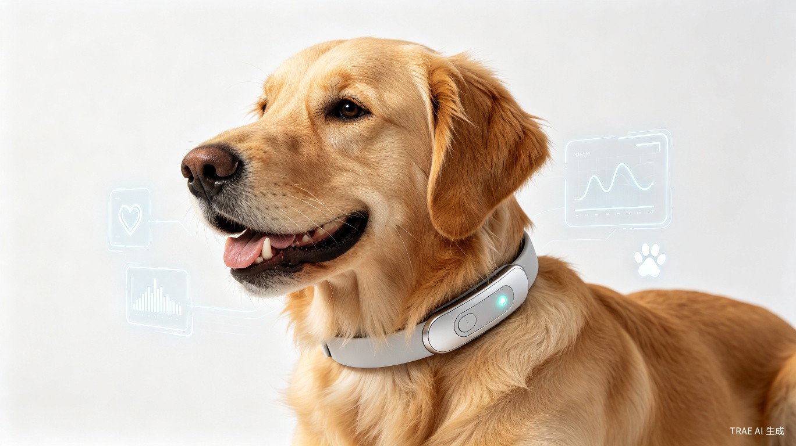
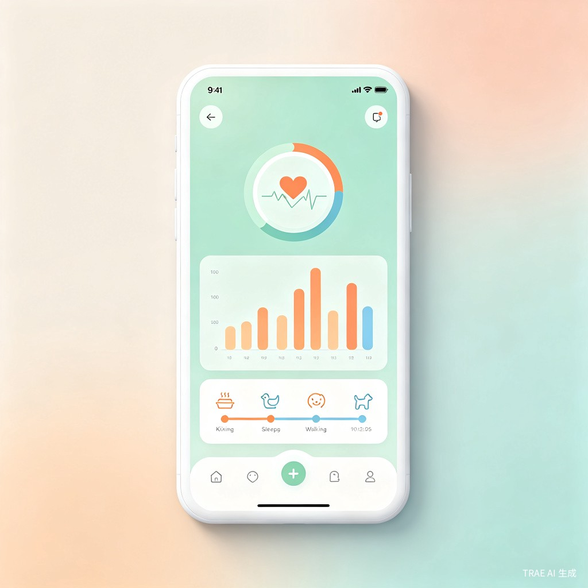

宠智环 PetMind 是一款集成多传感器的 AI 智能宠物项圈（及配套脚环），通过端侧 AI 芯片实时分析宠物的行为模式与健康数据，为宠物主人和公益救助机构提供 24 小时不间断的健康守护。
宠物无法用语言表达身体不适，主人往往等到症状明显才察觉，错过最佳干预时机。同时，流浪动物救助机构缺乏高效的健康筛查手段，导盲犬等工作犬也缺乏系统化的职业健康管理工具，盲人用户无法直观判断工作犬健康状态。
灵感来自自家猫咪曾因慢性肾病晚期才被发现，如果早期有持续健康监测本可避免。想到全球数亿宠物家庭都有类似痛点，同时关注到导盲犬服务的刚需缺口，决心打造一款真正「懂宠物」的智能硬件，同时覆盖家庭宠物、流浪动物救助、工作犬三大赛道。
硬件端：轻量化宠物项圈 + 可选脚环，集成心率、体温、加速度、GPS 等多模传感器；
软件端：手机 App（含 AI 养宠助手与社区）+ 救助站管理平台 + 导盲犬机构管理看板，形成完整的宠物健康守护生态。
PPG 光学心率传感器 + 红外体温探头，24h 连续监测，异常波动 5 分钟内推送告警
6 轴加速度计 + 陀螺仪，AI 识别 20+ 行为：进食、饮水、排泄、睡眠、玩耍、焦虑踱步等
自动区分深度睡眠 / 浅睡眠 / 清醒，生成睡眠报告，关联关节老化与疼痛信号
通过摇尾频率、耳朵姿态、活动节律，判断开心 / 紧张 / 害怕 / 疼痛等情绪
记录进食频率、时长、节奏变化，AI 推荐喂养方案，早期发现口腔或消化问题
实时位置追踪 + 活动范围热力图，超出安全区域自动通知，防止走失
长时间静止、频繁抓挠、异常踱步等 15 种异常模式自动识别并推送
长期数据积累形成宠物健康档案，支持导出给宠物医院，辅助诊疗决策
内置专业养宠知识库，支持图文/语音提问，AI 自动解答喂养、护理、疾病常见问题；同时开放用户发帖交流的社区板块，连接百万宠物主互助成长
当项圈检测到宠物呕吐行为时，APP 立即推送告警，并自动弹出智能问诊界面，引导用户上传呕吐物照片/描述情况，AI 结合心率、体温、进食记录等多项生理数据综合分析原因，给出临时解决方案与就医建议
设计理念：不只是监测数据的搬运工，更是宠物主人的 AI 养宠顾问。从"发现问题"到"分析原因"再到"给出方案"，形成完整的健康守护闭环。

PetMind 将导盲犬服务作为核心公益场景之一，为工作犬提供专业化、系统化的健康保障方案，覆盖服役期全生命周期管理。
为导盲犬定制加固型项圈/脚环，支持高强度使用场景，实时监测心率、体温、活动量、异常行为，IP67 防水防尘
为导盲犬运营公司/训练机构提供数据看板，批量查看所有服役导盲犬的健康档案、实时状态、服役时长、退役评估报告
当导盲犬出现健康异常时，平台第一时间通知管理员、盲人用户和对应服务机构，确保三方信息同步，保障出行安全
完整记录导盲犬从训练期到退役全过程的健康数据，为服役评估、退役安置、工作犬繁育提供科学依据
公益承诺：PetMind 承诺向注册认证的导盲犬培训机构免费提供全套设备与管理平台，同时为流浪动物救助站提供免费健康筛查工具，让科技同时温暖工作犬与流浪动物。
| 用户群体 | 核心场景 | 当前痛点 | PetMind 价值 |
|---|---|---|---|
| 城市宠物主 | 日常居家、外出遛宠 | 工作繁忙无法全天观察宠物状态 | 24h 自动监测 + 异常即时告警 |
| 多宠家庭 | 多只宠物同时管理 | 难以区分每只宠物的个体健康状况 | 多宠物档案 + 个体化 AI 模型 |
| 流浪动物救助站 | 入站筛查、日常巡护 | 动物数量多，人工筛查效率低 | 批量快速健康评估 + 公益数据平台 |
| 导盲犬培训机构 | 服役期监测、退役评估 | 缺乏长期健康档案，服役决策凭经验 | 专业穿戴设备 + 机构管理看板 + 职业健康档案 |
| 盲人导盲犬用户 | 日常出行安全保障 | 无法直观判断导盲犬健康状态 | 异常实时通知 + 三方联动告警 |
| 宠物医院 | 复诊参考、慢病管理 | 依赖主人主观描述，缺少客观数据 | 历史健康数据导出 + 辅助诊疗 |
公益承诺：PetMind 承诺向注册认证的流浪动物救助站免费提供项圈设备与云端管理平台，让科技温暖每一个需要被守护的生命。
| 维度 | PetMind | 传统定位器 | 进口智能项圈 |
|---|---|---|---|
| 心率监测 | ✔ 24h 连续 | ✘ 无 | ✔ 部分支持 |
| AI 行为识别 | ✔ 20+ 种 | ✘ 无 | ✔ 5-8 种 |
| 情绪识别 | ✔ 支持 | ✘ 无 | ✘ 无 |
| 端侧 AI | ✔ 本地推理 | ✘ 无 | ✘ 云端依赖 |
| 公益支持 | ✔ 救助站 + 导盲犬免费 | ✘ 无 | ✘ 无 |
| AI 养宠助手 | ✔ 图文/语音问答 + 社区 | ✘ 无 | ✘ 无 |
| 呕吐告警联动 | ✔ 智能问诊 + AI 分析 | ✘ 无 | ✘ 无 |
| 导盲犬专业服务 | ✔ 三方联动 + 管理看板 | ✘ 无 | ✘ 无 |
| 价格区间 | ￥299-499 | ￥99-199 | ￥800-1500 |
完成项圈硬件原型 + App MVP，支持心率、行为识别、GPS 三大核心功能，上线新手养宠 AI 助手，开展 100 只宠物内测
加入体温、睡眠、情绪识别，上线呕吐异常告警联动功能，开放救助站公益计划，积累 10,000+ 宠物健康数据集
推出导盲犬专属服务模块（加固硬件 + 机构看板 + 三方联动），与 3 家导盲犬培训机构建立合作，推出脚环配件
开放开发者平台，支持第三方插件；拓展至猫、兔、鸟等更多宠物类型；上线宠物主社区板块
PetMind 以手机 App 为主要交互入口，这是用户最常使用的产品形态。点击下方按钮体验完整的 App 界面。
📱 点击下方按钮进入手机 App 模拟器，体验：
健康评分、实时心率/体温/活动/睡眠数据、行为趋势波形图
多设备管理、振动/响铃/闪光控制、蓝牙连接质量实时监控
基于健康数据的养宠顾问，支持快捷问题一键提问
个人档案、宠物管理、流浪动物救助与导盲犬公益入口
PetMind 从概念到量产，TRAE 贯穿硬件开发全链路。
使用 TRAE Work 梳理硬件功能需求、传感器选型、功耗预算，生成产品规格书
TRAE 辅助生成电路原理图、PCB布局建议、3D结构设计参数
TRAE 生成嵌入式 C/C++ 代码：传感器驱动、数据采集、蓝牙协议栈、低功耗管理
TRAE 分析串口日志、定位硬件 Bug、优化传感器校准算法
TRAE 生成 App 端蓝牙通信代码、数据解析、UI界面，完成软硬件联调
TRAE 辅助生成测试脚本、产线校准流程、固件OTA升级方案
TRAE 在硬件开发中的核心价值：从需求文档到固件代码，从调试日志分析到量产测试脚本，TRAE 作为 AI 助手贯穿硬件产品全生命周期，显著提升开发效率。
体验完整的硬件交互流程：设备配对、实时传感器数据监测、固件升级、多设备管理等。
🎮 点击下方按钮进入硬件交互模拟器，体验：
蓝牙扫描 → 发现设备 → 验证身份 → 配对连接，完整还原硬件配对流程
PPG心率、红外体温、6轴IMU、GPS等多传感器数据波形实时展示
模拟设备固件在线升级流程，包含下载、校验、写入、重启全过程
支持项圈、脚环、导盲犬项圈等多设备同时连接与切换管理
模拟 PetMind 手机 App 的核心功能，体验实时健康监测与 AI 助手交互。
交互说明：在 AI 助手中输入问题即可体验智能问答功能。支持的问题示例："猫咪呕吐怎么办"、"狗狗正常体温"、"如何预防宠物焦虑"、"宠物心率多少正常"、"导盲犬健康管理"等。